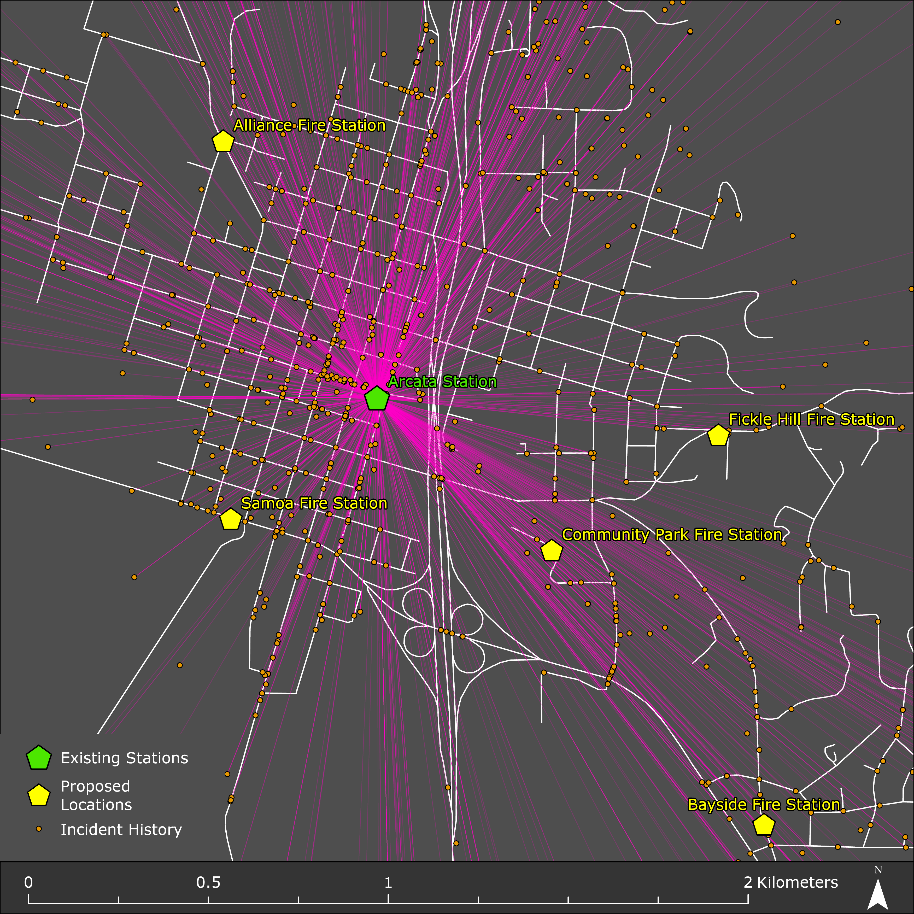
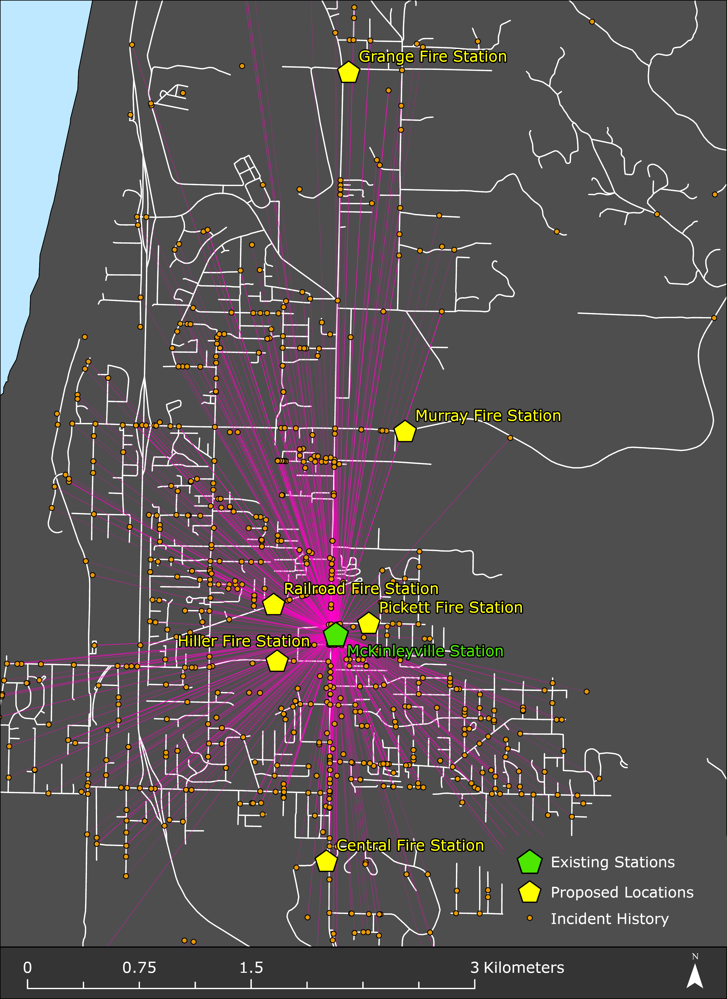
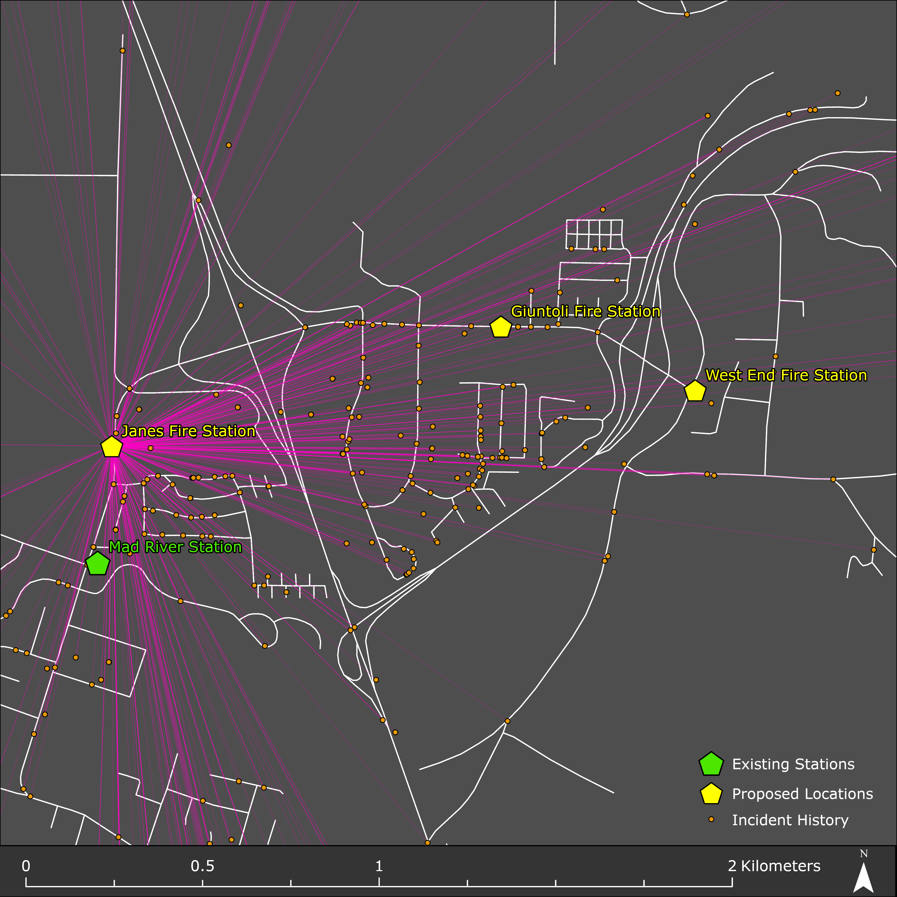

Arcata Fire Protection Distric Relocation Analysis
Adam Day | November, 2024
INTRODUCTION
The purpose of this report is to assist the Arcata Fire Protection District in their efforts to better serve their community through their fire protection methods. A key component in fire protection and prevention is response time, and response time is directly influenced by geographical position of fire stations. This report uses ArcGIS Pro to build a Network Allocation Model (NAM) to identify least-cost paths along a network within the fire district. By analyzing various parameters of this model, this report aims to identify the top three best suited location for the proposed fire stations.
The secondary goal of this paper is to give users a better understanding of how GIS can be used to determine least-cost paths within a developed network allocation model. Allocation models are a valuable tool which can improve efficiencies across many diverse sectors. In 2018, the paper titled “Snow Removal Resource Location and Allocation Optimization for Urban Networks” used various formulas to determine an optimal snow removal plan by developing a Vehicle Routing Problem to solve the snow removal resource location-allocation problem (Wang & Liu, 2019). This report uses GIS and GPS data as the foundation of this study, and is made possible by evaluating several criteria including the following:
By evaluating each of these criteria within the framework of this model, this project allows users to learn how to acquire data from public sources, geocode addresses, import XY data using different spatial reference systems, as well as defining projections of various map layers. Along with this, users are able create a network dataset, model network allocations based on the least-cost paths, adjust the model by altering various parameters based on demand weight, and ultimately evaluate the results from the model based on this demand.
METHODS
ArcGIS Pro was the GIS used for this analysis. A standard workspace was created with several folders and subfolders allowing for sorting of different files based on their needs. Original data and files were kept separate from working data and files, for example. As with many models, the preliminary stages of this project included data collection from publicly provided county GIS website. The Humboldt County GIS Data Download page provided the source for this analysis by providing road county boundary shapefile data. The NAD 1983 UTM Zone 10N spatial reference system was used as the core system throughout the lifespan of this project. This reference system was chosen as it geographically reflects the area of study of the Arcata Fire Protection District. Therefore, the boundaries of the Arcata Fire Protection District were set by a Select by Attribute method capturing all shapes where the ‘AGENCY’ field was equal to “Arcata Fire.” To ensure all roads within the area of study were captured, a 1-mile buffer around all roads within the Arcata Fire Protection District was created and each road segment within this buffer was used in this analysis. Once the road buffer was created, they were clipped to the Arcata Fire Protection District boundaries. After clipping the roads layer, the length of each new road segment was recalculated to reflect the new segments with meters as the unit of measurement. A time cost attribute was then added to the roads layer which calculated for the time of travel in minutes for each road segment. This was completed by using the Field Calculator tool with the following formula:
!Length!/(!AB_SPEED!*(1609.34/60))
Where ‘!Length!’ refers to the calculated road segment length, ‘!AB_SPEED!’ refers to the speed limit for this section of road. The results from this calculation were added to a new field in the Arcata Fire Protection District attribute table and provided the time of travel in minutes for each road segment.
The next step in the analysis involved including GPS data for each of the potential new locations for each of the new fire stations. The proposed_locations.csv file contains 15 new fires station locations with each entry including a name as well as latitude & longitude coordinates. ArcGIS Pro allowed for the exportation of this data into the GIS as a shapefile. It is important to note that the original datum source references coordinate in the WGS 1984 datum, requiring the conversion of the output coordinate system for this GPS data into the NAD 83 UTM Zone 10N system to maintain consistency across layers. Following this approach, three existing fire stations were also added into the map. This was accomplished by geocoding each location from Google Maps using the following addresses for each station:
Fire Stations
| Fire Station | Address |
|---|---|
| Arcata Station | 631 9th Street, Arcata, CA 95521 |
| Mad River Station | 3235 Janes Road, Arcata, CA 95521 |
| McKinleyville Station | 2149 Central Avenue, McKinleyville, CA 95519 |
This method provided the latitude & longitude coordinates similar to the city provided GPS data and was imported in ArcGIS Pro using a created .csv file similar to the previous mentioned methods.
After the GPS data for the new and existing fire stations were added, a Network Dataset was created using the roads layer previously created. The roads layer was imported into the Geodatabase and titled roads_ND.
With the data created and the network dataset established, a Network Allocation Model (NAM) was created in ArcGIS Pro using the Network Analysis function. First, the facilities (new & existing fire stations) were loaded into the NAM. Location Analysis Properties were set for these facilities to ensure the following property types corresponded with their correct field types:
| Property | Field | Default Value |
| Name | Name | null |
| FacilityType | null | Candidate |
| Weight | null | 1 |
| Curb Approach | null | Either side of vehicle |
Next, the demand points were loaded into the NAM under the Demand Points option. The Demand Points for this analysis constitute the data captured incident¬_history.csv. Prior to loading the demand points into the NAM, each demand point was assigned a weight to reflect the priority in response time. Incidents involving building fires, wildland fires, brush fires, and trash fires were assigned a weight of ‘3’. Incidents involving medical assistance and emergency medical services were assigned a weight of ‘2’. Incidents involving every other type of emergency were assigned a weight of ‘1’. Property types were matched with their corresponding fields as describe earlier. The final adjustment of this model includes establishing Location Allocation parameters. This includes the following travel settings:
| Direction | Away from facilities |
| Cutoff | 2 |
| Facilities | 3 |
| Type | Maximize Coverage |
After establishing these parameters, the model was run to determine the top three best suited locations for the fire stations within the Arcata Fire Protection District.
RESULTS
Several variations of the NAM were run to determine the top three most suitable locations for fire stations based on demand load and geographical position of historical incidences. For this analysis, four models were run in the NAM. Model one reflects the outcome using a two-minute maximized coverage to determine which stations respond to incidences within a two-minute time travel window. Model two uses the “Maximize Attendance” parameter which allocates demand based on both weight and distance to the candidate facility. This model type is useful in that it will allocate a significance of the demand weight based on the distance from the candidate facility to the incident. Model two also utilizes a two-minute time travel window. Model three also uses the “Maximize Attendance” parameters but includes the three listed existing fire stations to compare them to the proposed locations while operating under a two-minute time travel window. Model four is identical to Model three with the exception of the time travel window being increased to five minutes. The tables below each reflect the outcomes of the various NAM models ran for this analysis. A further discussion on the outcomes of these models can be found in the discussion section of this paper.
The following table represents the outcomes of the first model ran in the NAM:
Table 1: NAM Outcome 01
| Location | Demand Count | Demand Weight |
|---|---|---|
| Samoa Fire Station | 1087 | 1668 |
| Hiller Fire Station | 869 | 1395 |
| Giuntoli Fire Station | 559 | 871 |
The following table represents the outcomes of the second model ran in the NAM:
Table 2: NAM Outcome 2
| Location | Demand Count | Demand Weight |
|---|---|---|
| Samoa Fire Station | 1087 | 815 |
| Pickett Fire Station | 790 | 490 |
| Janes Fire Station | 537 | 399 |
The following table represents the outcomes of the third model ran in the NAM:
Table 3: NAM Outcome 3
| Location | Demand Count | Demand Weight |
|---|---|---|
| Arcata Fire Station | 1265 | 1079 |
| McKinleyville Station | 934 | 739 |
| Janes Fire Station | 537 | 399 |
The following table represents the outcomes of the fourth model ran in the NAM:
Table 4: NAM Outcome 4
| Location | Demand Count | Demand Weight |
|---|---|---|
| Arcata Fire Station | 2331 | 2201 |
| McKinleyville Station | 1663 | 1636 |
| Janes Fire Station | 948 | 895 |
The results of NAM Model 04 were used to determine the location the three most optimal fires station locations which include Arcata Station, McKinleyville Station, and Janes Fire Station. Figure 1-3 below visually represent these three optimal zone locations, in correspondence to their incidence responses within the Arcata Fire Protection District.
Figure 1: Arcata Fire Station Zone
Figure 2: McKinleyville Fire Station Zone
Figure 3: Janes Fire Station Zone
CONCLUSION
This report analyzed a Network Allocation Model to determine the optimal locations for three fire stations within the Arcata Fire Protection District. The results show different counts of demand and weight from the analyzed stations, indicating differences in resource requirements among the locations. Arcata Station had the largest demand count with 2,331 and the demand weight of 2,201; McKinleyville Station was the next largest at 1,663 demand count and 1,636 demand weight. Janes Fire Station had the lowest demand count with 948 and a demand weight of 895.
The results suggest Arcata Station being the ideal location for a primary fire station as it has the highest demand count and weight. McKinleyville Station is the second ideal location, with moderately high demand which requires fewer resources compared to Arcata. Janes Fire Station had the lowest demand count of the three, but still outperformed the three neighboring fire stations, including the existing Mad River Station, making it the third ideal candidate for a fire station location. Based on these results, planning and resource allocation should be prioritized to Arcata Station due to the high demand count, followed by McKinleyville Station, and finally Janes Fires Station.
REFERENCES
Wang, Jing, and Haotian Liu. “Snow Removal Resource Location and Allocation Optimization for Urban Road Network Recovery: A Resilience Perspective.” Journal of Ambient Intelligence and Humanized Computing 10, no. 1 (2019): 395–408. https://doi.org/10.1007/s12652-018-0717-3.